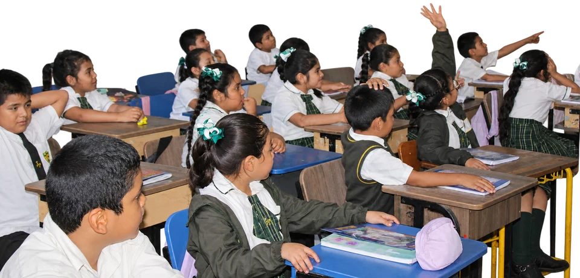

Galería · Tambogrande
Personas y momentos
que nos unen.
Una mirada a nuestra comunidad. Selecciona una fotografía para verla completa.





Galería · Tambogrande
Una mirada a nuestra comunidad. Selecciona una fotografía para verla completa.
